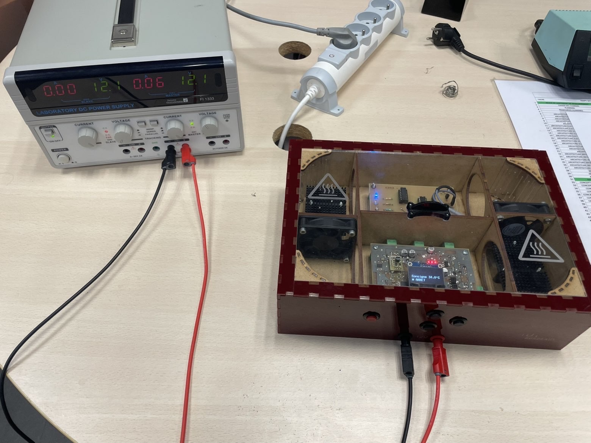
Présentation du projet
Projet réalisé en équipe de 4 pour Baby Corporation, encadré par F. AUGEREAU et A. ADEL. L'objectif : concevoir un thermomètre de bain pour nourrissons sur double face (100 × 60 mm).
Le principe est simple : un capteur mesure la température de l'eau. Un circuit électronique compare cette valeur à deux seuils et allume une seule LED selon le résultat — bleue (eau froide, < 35,5 °C), verte (eau idéale, 35,5–38,4 °C) ou rouge (eau trop chaude, > 38,4 °C).
Architecture du circuit
Le circuit est organisé en 4 blocs fonctionnels : Acquisition (le capteur lit la température), Traitement (un circuit compare et décide), Action (les LEDs s'allument) et Énergie (la batterie alimente l'ensemble).
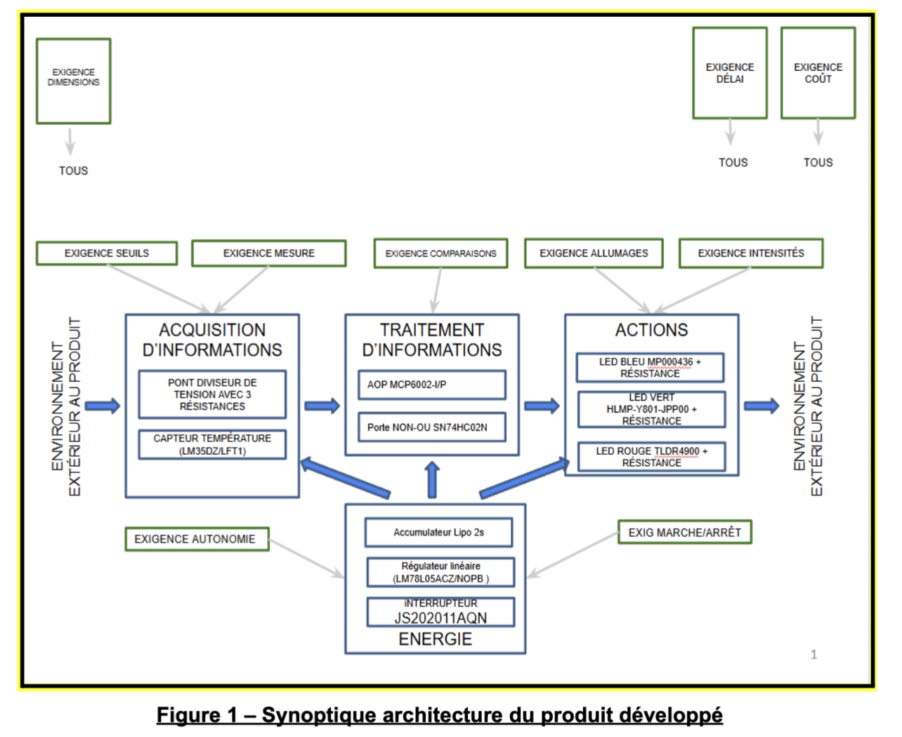
Les 3 signaux de température
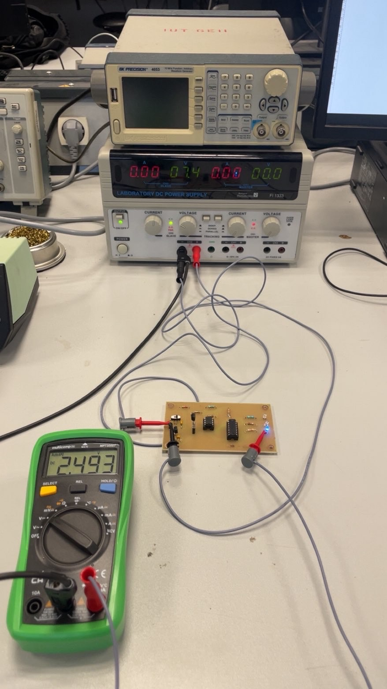
🔵 Eau froide — < 35,5 °C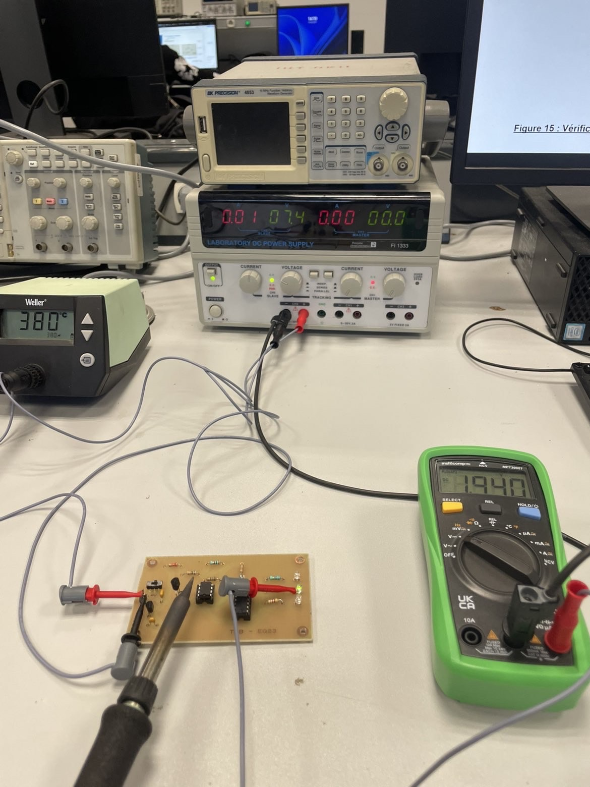
🟢 Eau idéale — 35,5–38,4 °C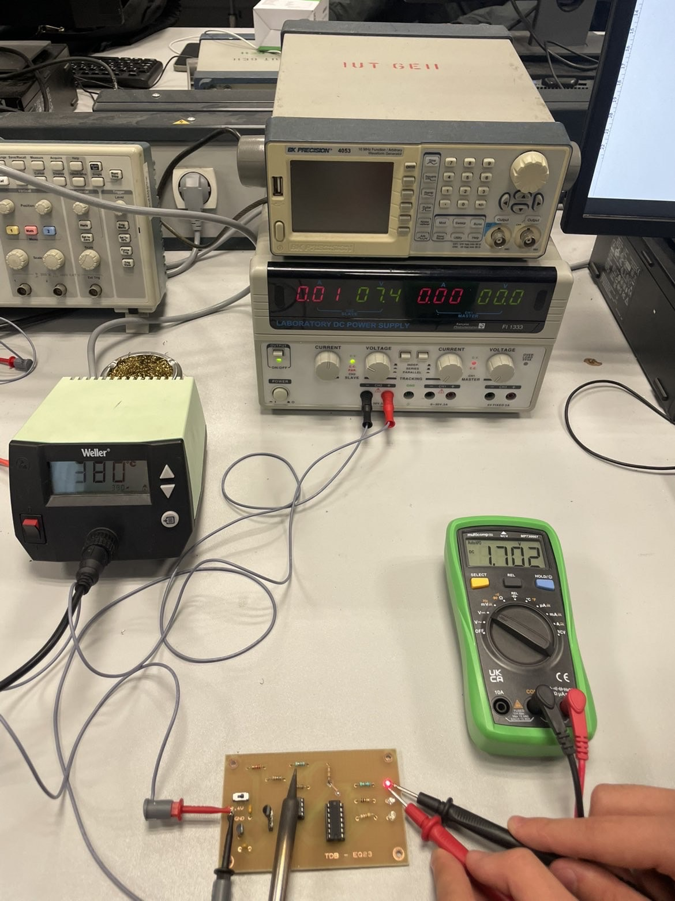
🔴 Eau chaude — > 38,4 °CComment ça fonctionne ?
Marche / Arrêt & Autonomie
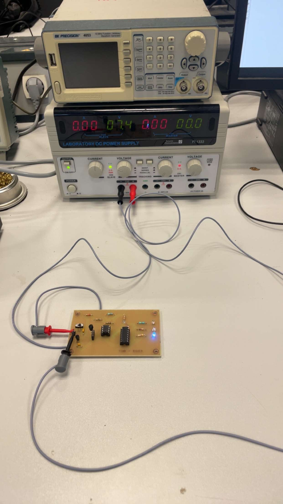
Appareil en marche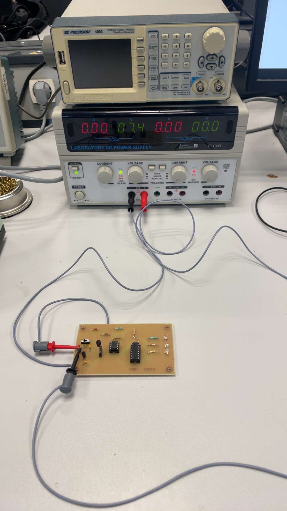
Appareil à l'arrêt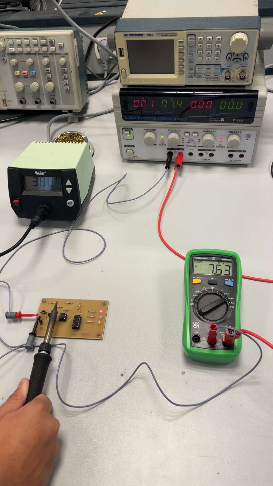
Mesure du courant (7,63 mA → 36,6 h)Vérification des seuils
On a mesuré les tensions exactes à partir desquelles la LED change. Ces valeurs ont été comparées aux calculs théoriques — l'écart est inférieur à 2 %, ce qui est très précis pour un circuit fabriqué à la main.
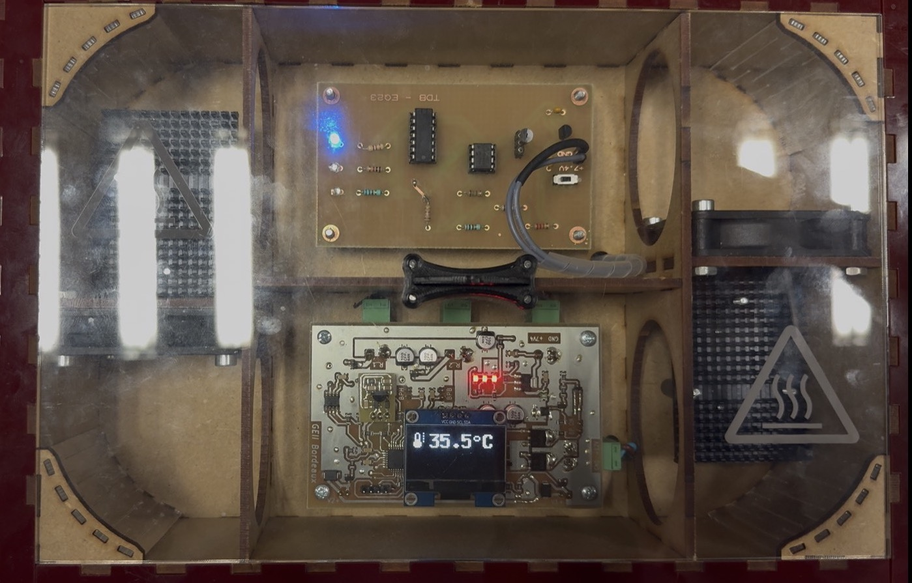
Seuil froid : 35,5 °C — erreur 1,4 %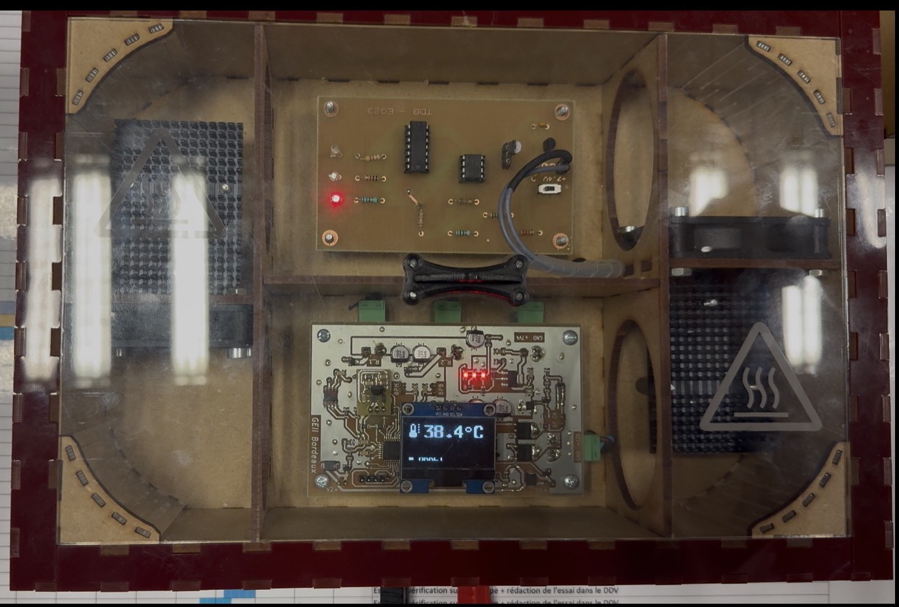
Seuil chaud : 38,4 °C — erreur 1,5 %Schémas électroniques
Le schéma ISIS montre comment les composants sont connectés. Le routage ARES est le plan du circuit imprimé tel qu'il a été gravé et fabriqué à l'IUT.
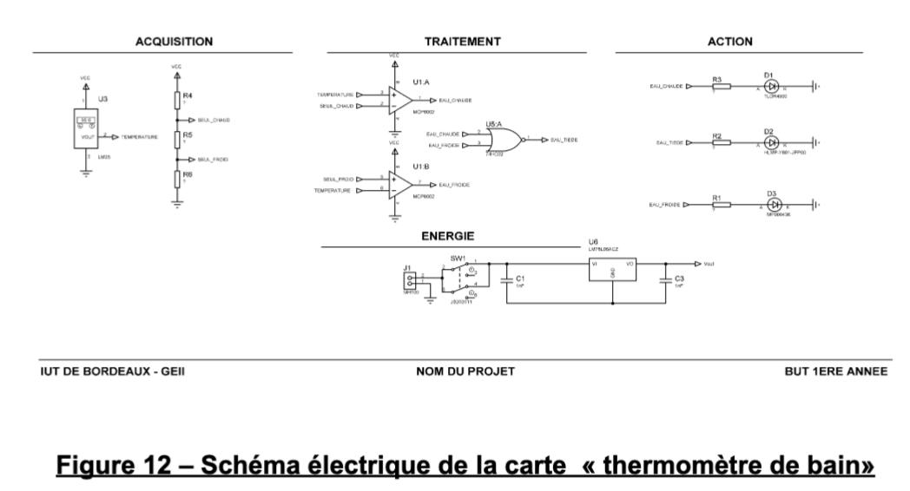
Schéma électrique (ISIS)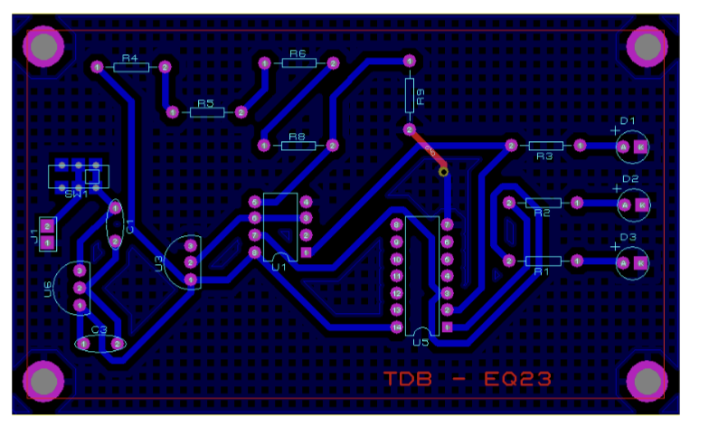
Plan du circuit imprimé (ARES)Tableau des composants
Liste complète des composants retenus avec leurs références, caractéristiques et rôles dans le circuit.
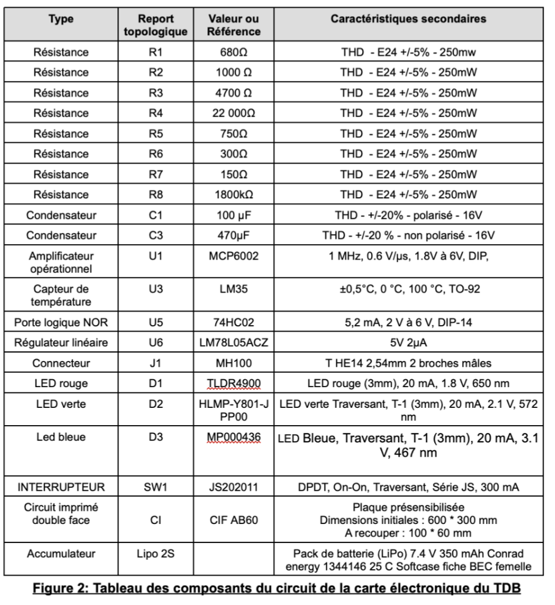